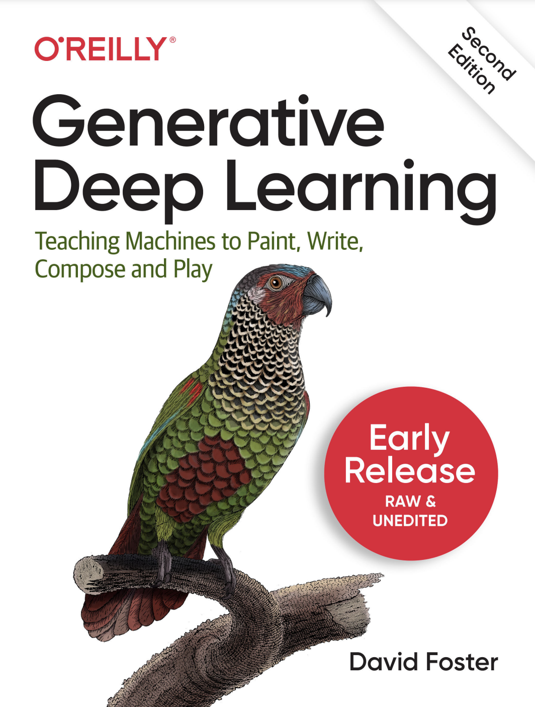

生成式深度学习教学与实践平台
O’Reilly 出版图书《Generative Deep Learning: Teaching Machines to Paint, Write, Compose and Play》（第二版）

| 序号 | 内容 | 参考代码 | 参考PPT |
|---|---|---|---|
| 1 | AIGC概述 | 无 | PPT |
| 2 | 深度学习与概率论基础 | deeplearning | PPT |
| 3 | VAE | vae | PPT |
| 4 | GAN | gan | PPT |
| 5 | Diffusion | diffusion | PPT |
| 6 | 自回归模型 | autoregressive | PPT |
| 7 | 大语言模型 | transformer | PPT |
| 8 | 多模态大语言模型 | 无 | PPT |
| 9 | 视觉生成模型 | 无 | PPT |
| 10 | AIGC模型的安全与伦理问题 | 无 | PPT |
| 11 | 课程项目展示与评估 | 无 | PPT |
基于深度神经网络设计并实现创新型 AIGC 应用。